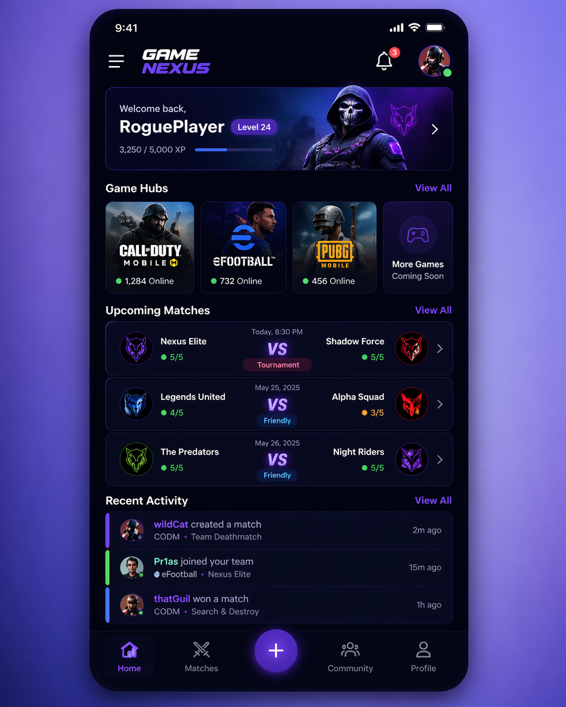
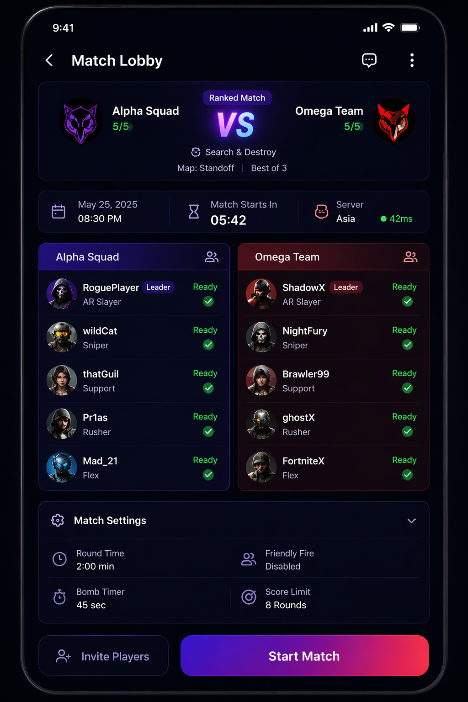

A centralized platform designed for gamers to connect, compete, and manage matches across titles like CODM and eFootball.


Gamers lacked a structured platform to organize matches, track participation, and build communities around competitive play.
Built a scalable community platform:
• Organized gaming hubs (eFootball, CODM)
• Match coordination system
• Player interaction and engagement features
• Structured team/community management
Created a growing ecosystem where players can easily connect, organize games, and build competitive communities.
• Community-based architecture • Match scheduling and coordination • Player grouping and interaction • Expandable structure for new games
JavaScript, Node.js, Express, Frontend UI, Community Logic Systems
Active development — evolving into a full gaming ecosystem (Game Nexus).